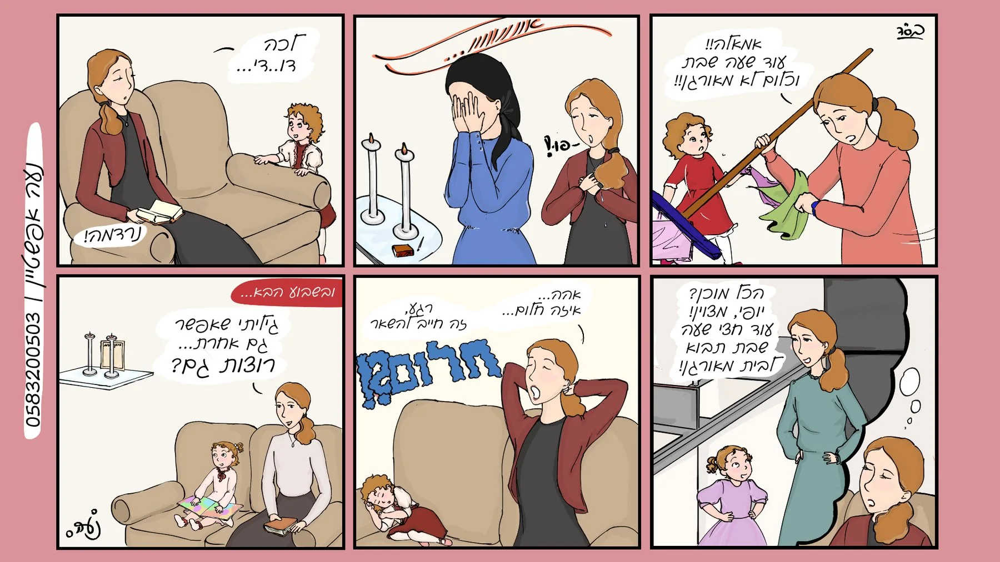
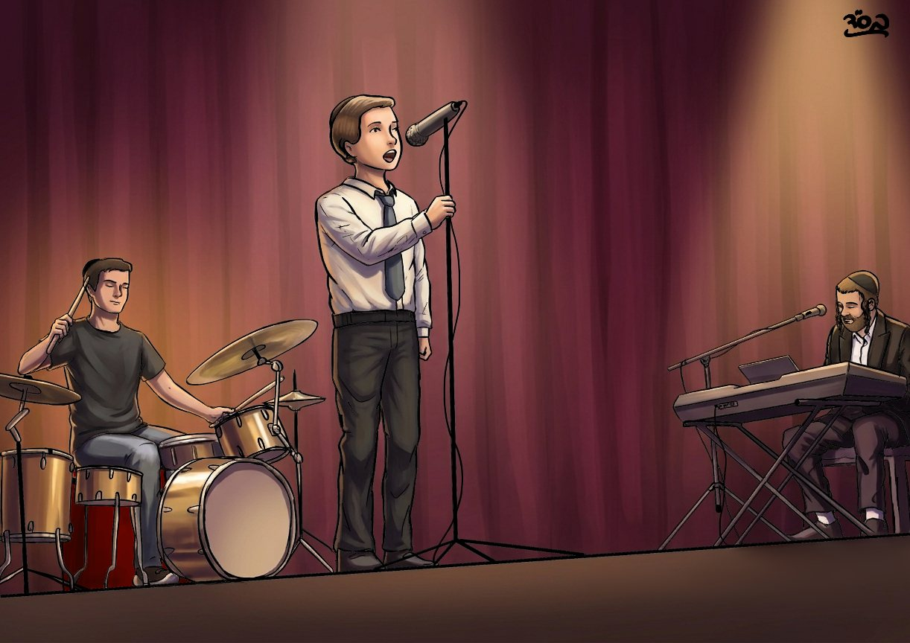
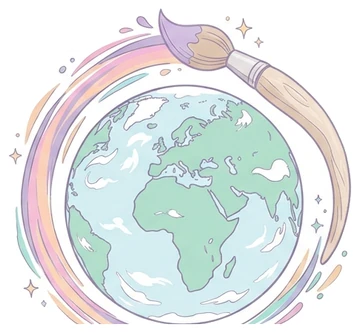

ברוכים הבאים לבראשית
אני מציירת כי ציור הוא כוח מופלא: הוא הופך רגע קטן לסיפור. הסתובבו בגלריה, קראו קומיקס, ואם תרצו — אצייר גם בשבילכם.
להזמנת ציורקומיקסים

לכל הקומיקסים ←גלריה

לכל הציורים ←
ליצור עולם בדיו
אני מציירת כי ציור הוא כוח מופלא: הוא הופך רגע קטן לסיפור. הסתובבו בגלריה, קראו קומיקס, ואם תרצו — אצייר גם בשבילכם.
להזמנת ציור
לכל הקומיקסים ←
לכל הציורים ←